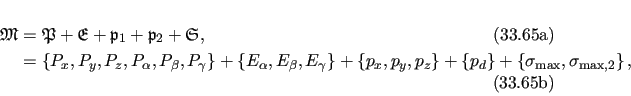

Next: Double rotor equations Up: Double rotor frame order Previous: Double rotor frame order Contents Index
Assuming the axes are orthogonal for the model, the size of the set of non-redundant parameters is 15. To eliminate the redundant parameters, the geometry of the system can be used to construct a 3D eigenframe of the motion consisting of three Euler angles:
The two pivot points defining the position in space of the two rotor axes define the system. Using the above eigenframe, these can be parameterised using only four parameters:
The set of all parameters of the system is therefore
|  |
where Pi are the average domain position translations and rotations, Ei are the eigenframe Euler angles, pi are the coordinates of the 1 pivot point, pd is the displacement for the 2 pivot point, and σmax, i are the two torsion half-angles of the rotors.